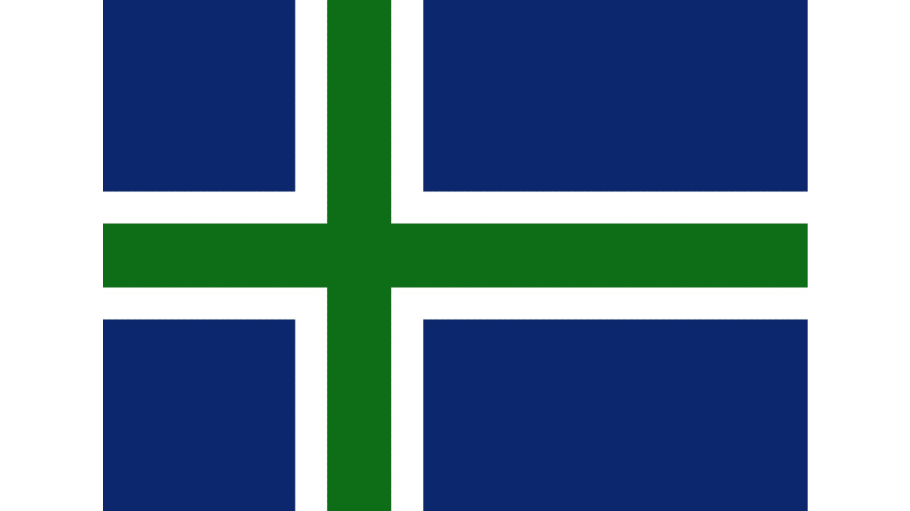
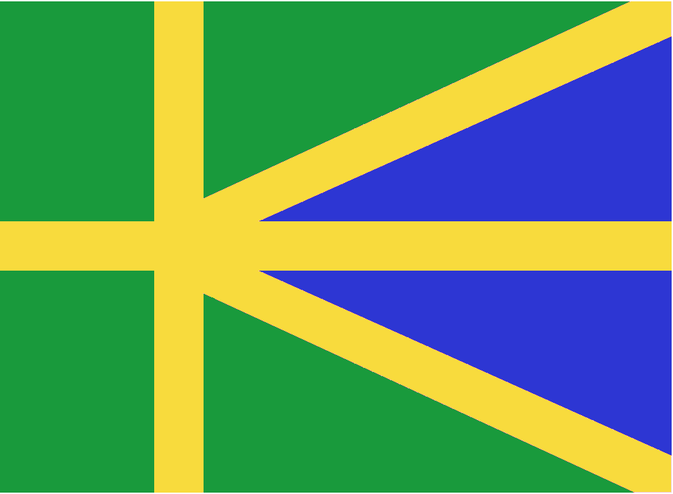
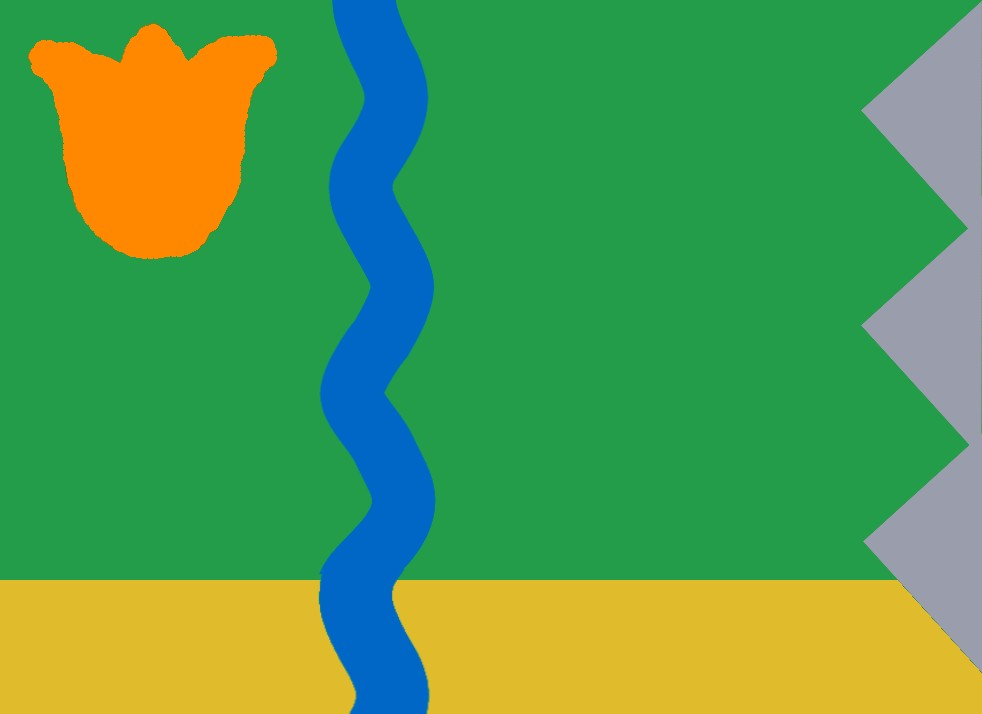
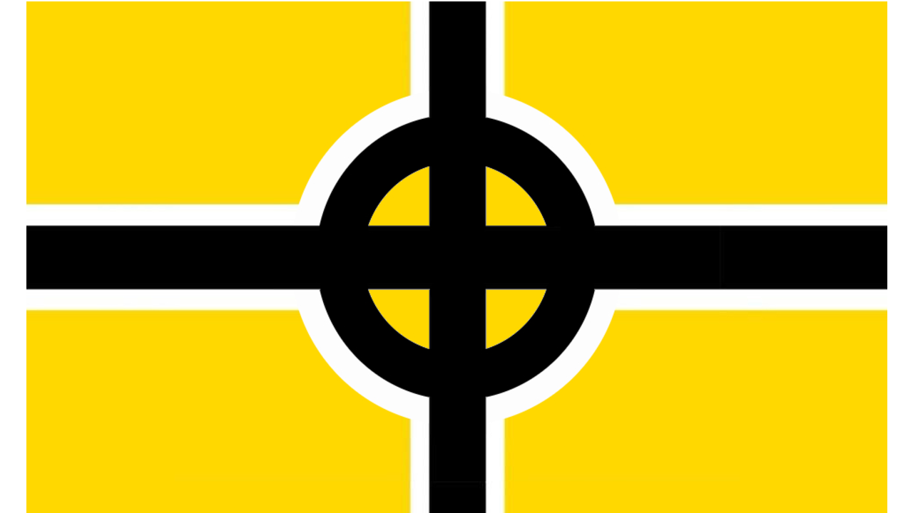
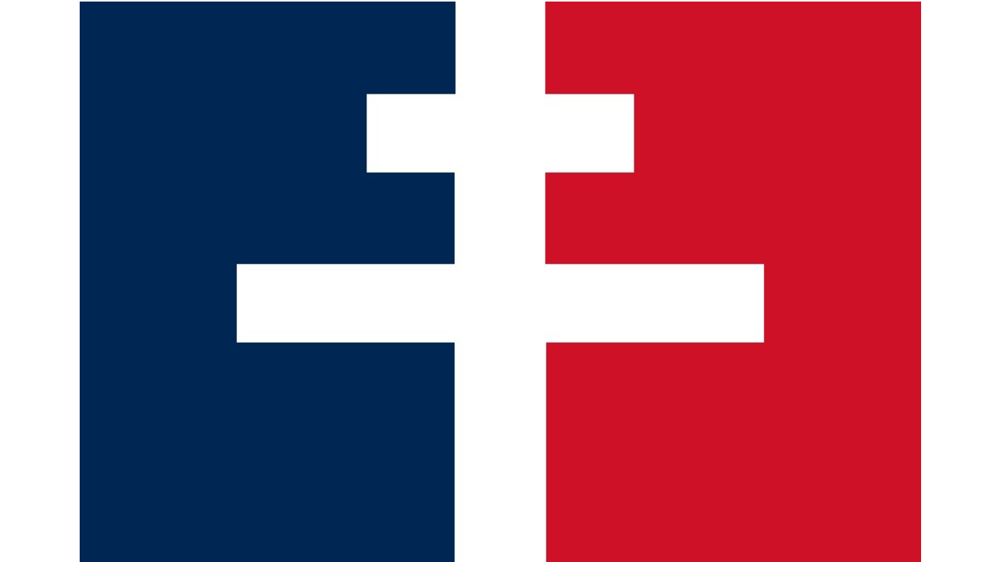
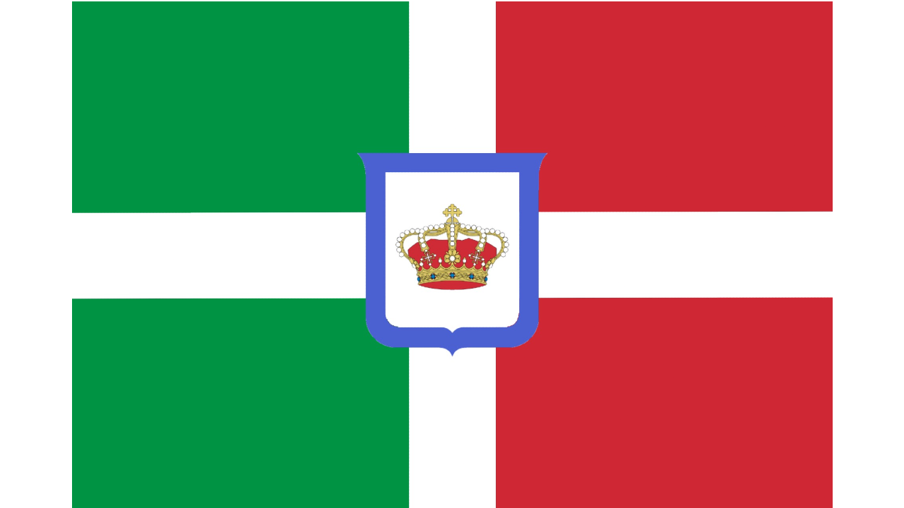

Monardo's Vexillology
Vexillology is the study of flags. I like flags. I think they're cool. So Here are some flags I designed!

This is a flag I designed for my personal use, you might see it on some of my profiles! It also turns out that it is the proposed flag for North Uist, so I guess I was on to something when I made it!

This is a flag design I made, it uses a Scandinavian Cross, with a Pall incorporated. I think it looks kind of neat.

This is a flag I made for Skagit County, which is near where I live. It is not the official flag, just one I made for fun!

This is just a flag I made that combines a traditional cross flag, with a ringed cross, I think it turned out pretty good.

This flag combines the flag of France and the flag of Free France, which had the Cross of Lorraine, so I combined them to create this flag.

This design is just a sort of new take on the flag of Monarchist Italy, it takes the elements from the Coat of Arms and spreads them over the whole flag.